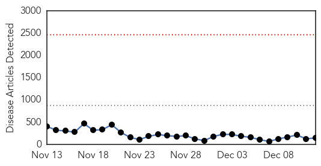
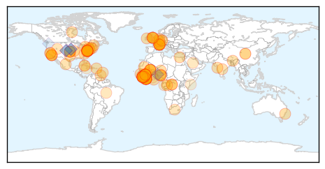

Toggle navigation
Early Warning
Daily Alerts
Ebola
Dec 12, 2014
Compare to:
-
Dengue Fever
Hemmorhagic Fever
Mold/Fungal Infection
Influenza
Meningitis
Pertussis / Whooping Cough
Middle East Respiratory Syndrome
Cholera
Hepatitis
Chikungunya
Yellow Fever
Bubonic Plague
West Nile Virus
Swine Flu
Measles
Unknown
Mumps
30 Day Trends
Web: 0
alerts
, 0
warnings
Twitter: 0
alerts
, 0
warnings
Top Articles:
Showing top 50 articles...
1.000
Democratic Republic of the Congo: The country that knows how to beat Ebola
1.000
Ebola in Sierra Leone: Nation declares 2-week Ebola 'lockdown'
1.000
Sierra Leone area to hold 2-week Ebola ‘lockdown’
1.000
Rising Ebola figures cause alarm
1.000
Ebola fighters named TIMEs ‘Person of the Year’
1.000
Surveys, Firestone model yield lessons for aiding Ebola survivors
1.000
Sudan Vision Daily
1.000
Sudan Vision Daily
1.000
Sierra Leone district faces #Ebola lockdown
0.999
£190m boost for Ebola-ravaged nations as group to buy vaccine
0.999
No Ebola Case Remaining As Last Patient Recovers – Mali
0.999
‘More time needed to tackle Ebola’ - Africa
0.999
Democratic Republic of the Congo The Country That Knows How to Beat Ebola
0.999
Sierra Leone Bans Christmas And New Year’s Celebrations In An Effort To Curb Ebola
0.999
A chat with 'Ebola Nurse' Kaci Hickox on how bad quarantine causes harm
0.999
DTRA Medical Countermeasures Help West African Ebola Crisis
0.999
Sierra Leone Hits Back at Ebola Outbreak Claims
0.999
Zylast™ Wins USAID "Fighting Ebola Grand Challenge"
0.999
Mali: Last known Ebola case has recovered
0.999
Mali beats Ebola outbreak
0.999
Sierra Leone bans festive celebrations — RT News
0.999
The best way to spend the $6.2 billion Congress set aside to fight Ebola
0.999
Sierra Leone district faces Ebola lockdown
0.998
Supporting Ebola Survivors -- ATLANTA, Dec. 12, 2014 /PRNewswire-USNewswire/ --
0.998
EU acts together to stop Ebola
0.998
Long, costly battle to rebuild Ebola-hit health systems: ministers
0.998
Editorial: Ebola crisis eases but far from over
0.998
Summit aims to raise awareness of ongoing Ebola crisis 12/12/2014
0.998
Supporting Ebola Survivors
0.997
Australian Ebola hospital opens but returning senator calls for greater contribution
0.997
Sierra Leone plans Ebola lockdown Republican American
0.997
Ebola crisis: Sierra Leone cancels all public Christmas celebrations as infections continue to rise
0.997
How America's Health Care System Could Benefit From Ebola
0.997
American Doctor Who Narrowly Escaped Ebola Death Shares Experience at UCSF
0.997
Mali: last known Ebola case cured, released
0.997
Sierra Leone cancels Christmas as Ebola crisis deepens
0.996
Amid Ebola crisis, Sierra Leone ‘cancels Christmas‘ « Hot Air
0.996
Australian Ebola hospital opens but returning senator calls for greater contribution
0.996
Ebola: UN envoy says intense response needed for western Sierra Leone and Guinea-Mali border
0.996
Knoxville doctor looking for participants to test Ebola vaccine
0.996
UN names veteran humanitarian official as new head of Ebola mission
0.995
UNICEF raises Ebola appeal to US$500 million to boost fight against Ebola and strengthen community-based... -- TORONTO, Dec. 12, 2014
0.995
Ebola: MSF handing over activites as outbreak is contained in Lofa county, Liberia
0.994
Sierra Leone forced to cancel Christmas as Ebola spreads
0.994
Sierra Leone cancels Christmas over Ebola
0.994
Sierra Leone faces two-week Ebola lockdown
0.994
Medical shortages hinder Ebola relief, survivors grieve
0.993
Ebola crisis is long-term fight, warns head of Red Cross
0.993
Why Did Ebola Pop Up In A Remote Mining District?
0.993
Sierra Leone Imposes Two-Week Lockdown After Finding 'Piles of Bodies' in New Ebola Hotspot
Top Tweets:
0.984
RT: Ebola Update: 17908 confirmed probable and suspected cases of Ebola in 3 most affected countries. 6373 reported deaths. Eb…
0.899
Text "STOP EBOLA" to *7979* to make your contribution towards Kicking Ebola out of Africa AfricaAgainstEbola @MSF
0.879
RT: @EbolaAlert Ebola: US $35 million grant from King Abdallah of SaudiArabia to fight Ebola in West Africa Islamic http:/…
0.866
How has Ebola made WFP more resilient? Has Ebola helped WFP to prepare for other infectious disease crises the future may bring?
0.546
Because the Ebola outbreak is NOT over TackleEbola
http://t.co/AV0u2SKXyW
0.519
RT: Ebola toll in Guinea Sierra Leone and Liberia reaches 6583: WHO
http://t.co/u2h1HT7fv1
0.508
RT: Last known Ebola patient in Mali cured
http://t.co/vo9tHQvqLg
via Ebola
Web/News Articles

Tweets
Article Locations

Article Confidences